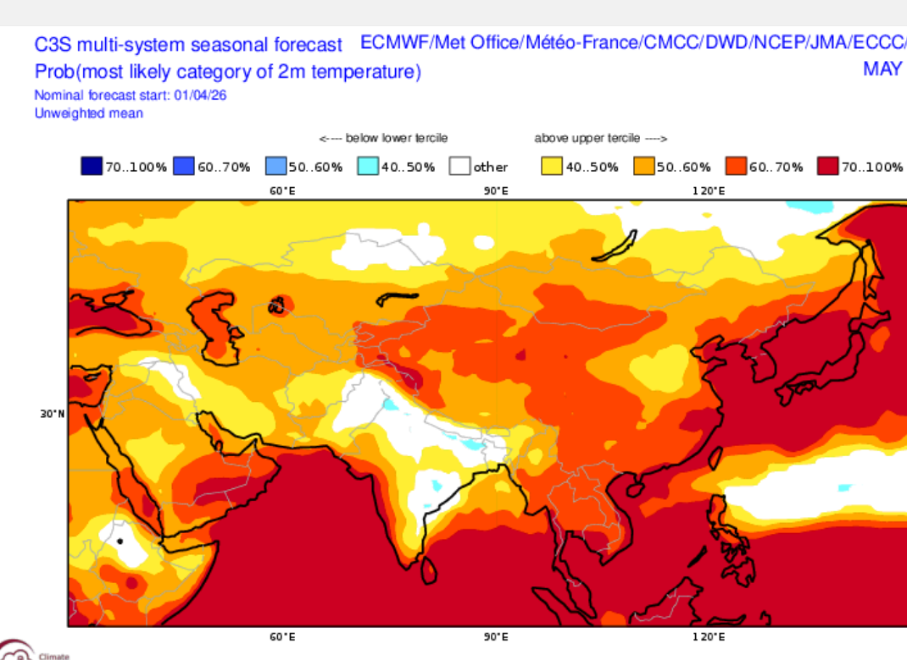
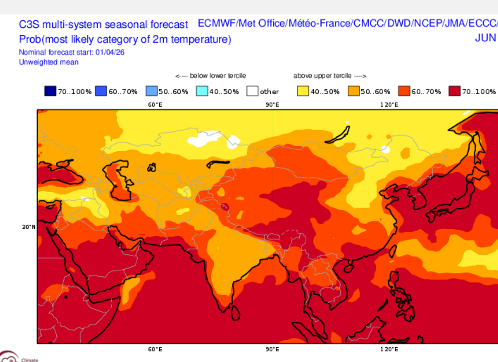
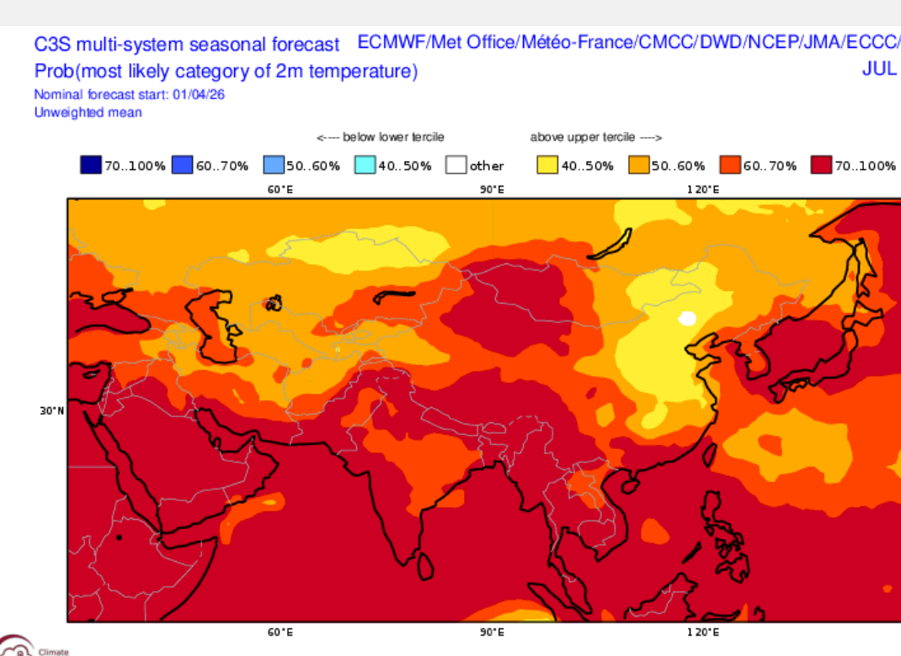
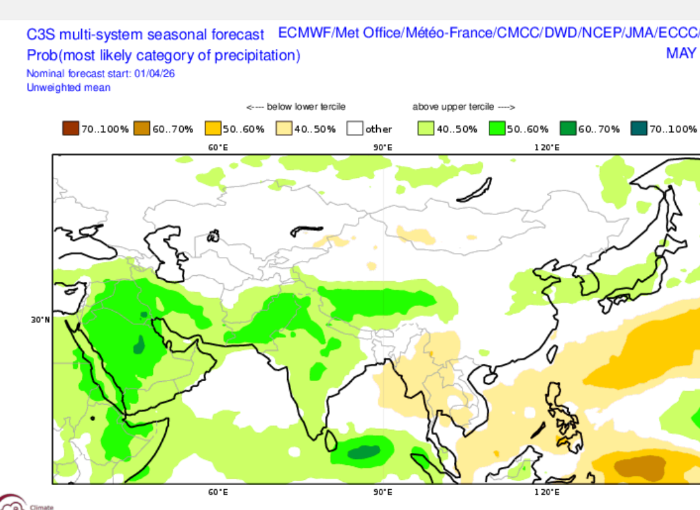
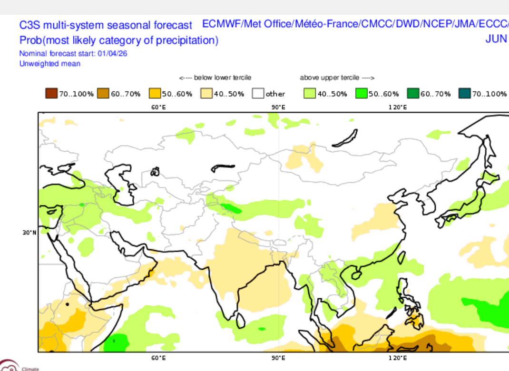
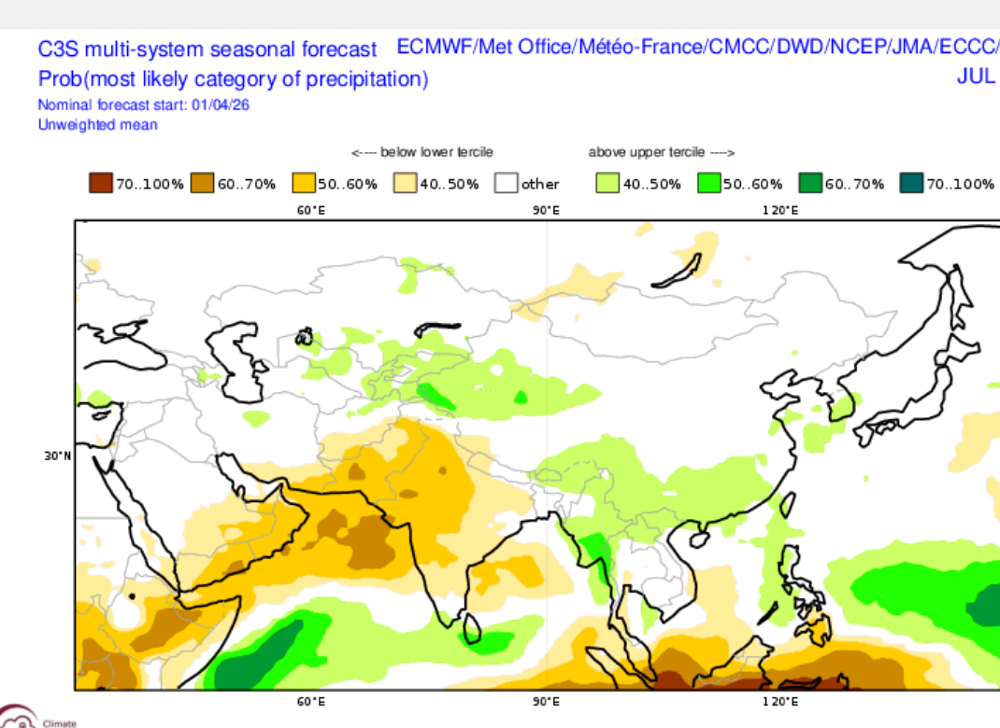

월별 판독
- 5월: 한반도는 상위 tercile 우세, anomaly도 대체로 `+1°C` 안팎으로 온난합니다.
- 6월: 세 달 중 warm signal이 가장 응집적입니다. 한반도와 일본 주변의 고온 우세가 강화됩니다.
- 7월: 여전히 상위 tercile 우세입니다. 다만 북중국 일부는 6월보다 약해집니다.
운영 문안
- M+1: 평년보다 높을 가능성 높음
- M+2: 평년보다 높을 가능성 매우 높음
- M+3: 평년보다 높을 가능성 높음
- 결론: 기온은 `C3S multi-system만으로도 비교적 강한 객관 근거`를 제시할 수 있습니다.





월별 판독
- 5월: 한반도는 약한 상위 tercile 또는 중립 경계. 강수 증가 중심은 남쪽 해역 쪽이 더 분명합니다.
- 6월: 한반도는 near-normal에서 약한 상위 tercile 쪽. 남중국-대만-필리핀 주변이 더 강합니다.
- 7월: 열대 서태평양과 남쪽 해역 습윤 anomaly가 강하고, 한반도는 약한 습윤 또는 중립으로 보는 편이 안전합니다.
운영 문안
- M+1: 평년과 비슷하거나 다소 많을 가능성
- M+2: 평년과 비슷하거나 다소 많을 가능성
- M+3: 평년 또는 평년보다 조금 많을 가능성
- 결론: 강수는 `wet call`을 강하게 주기보다 `약한 습윤 경향 + 낮은 신뢰도`로 표현하는 것이 객관적입니다.